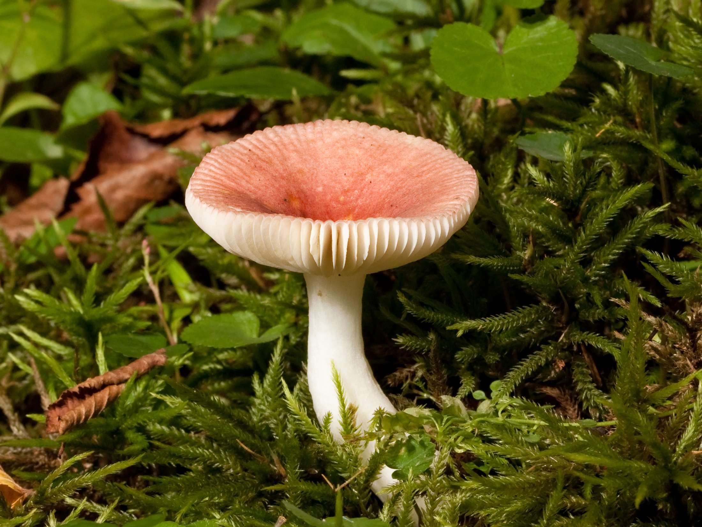
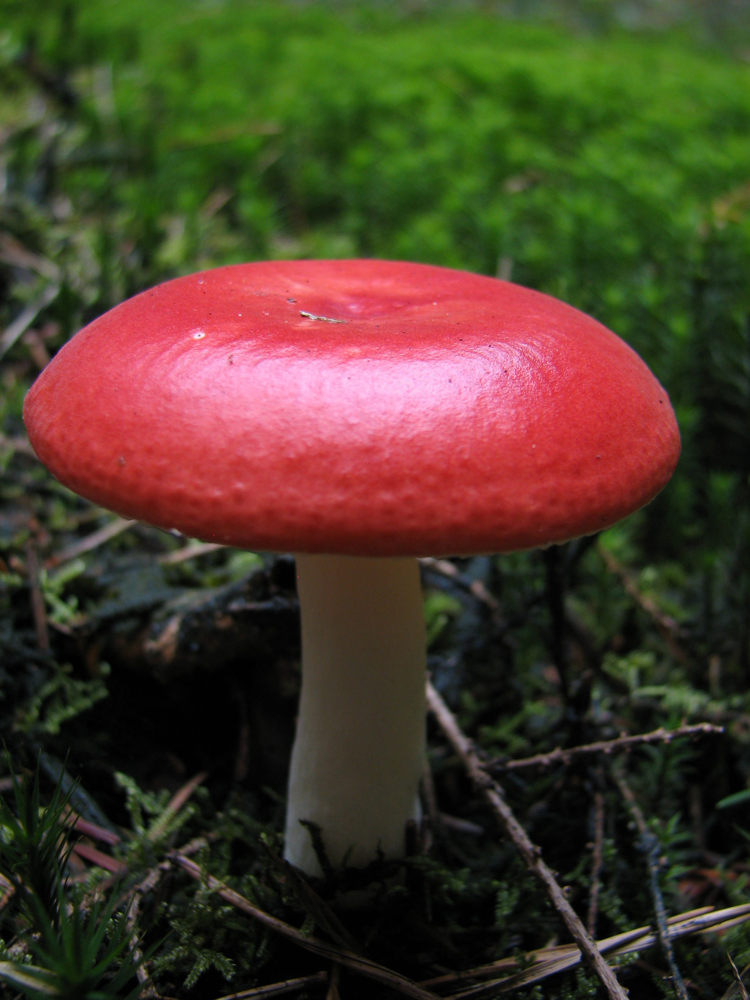
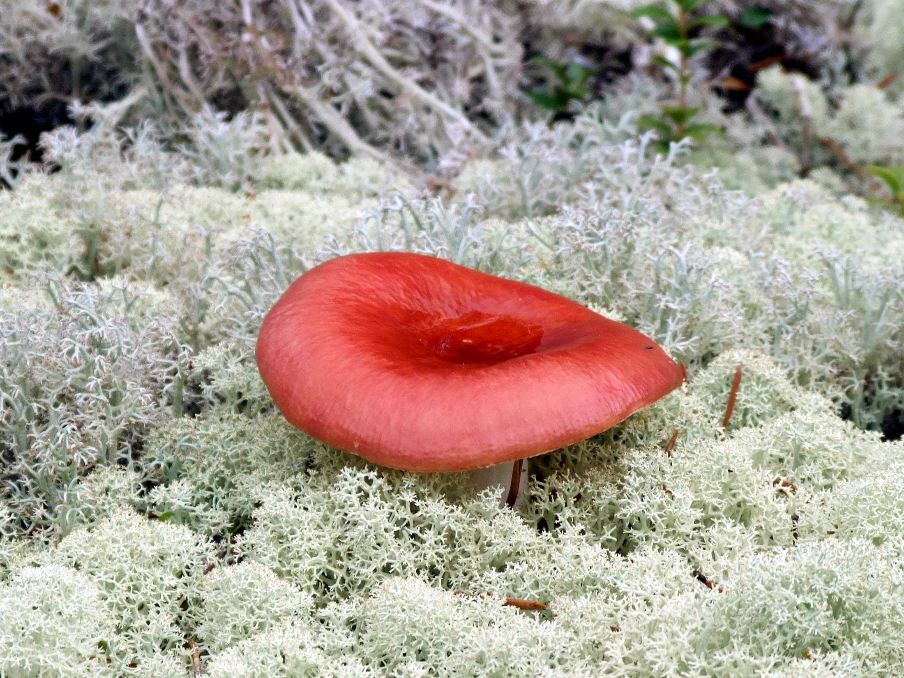
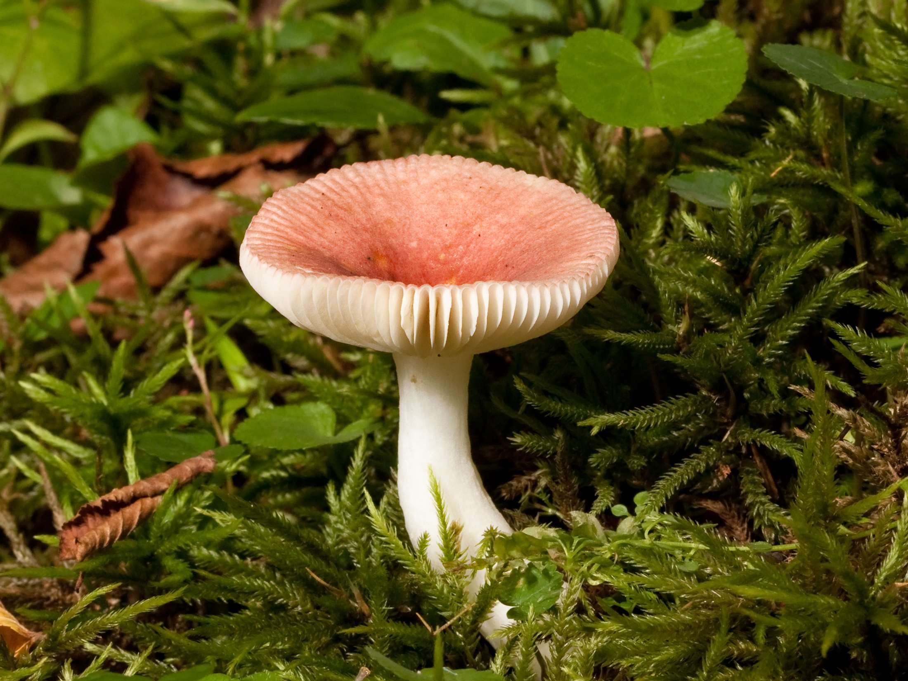
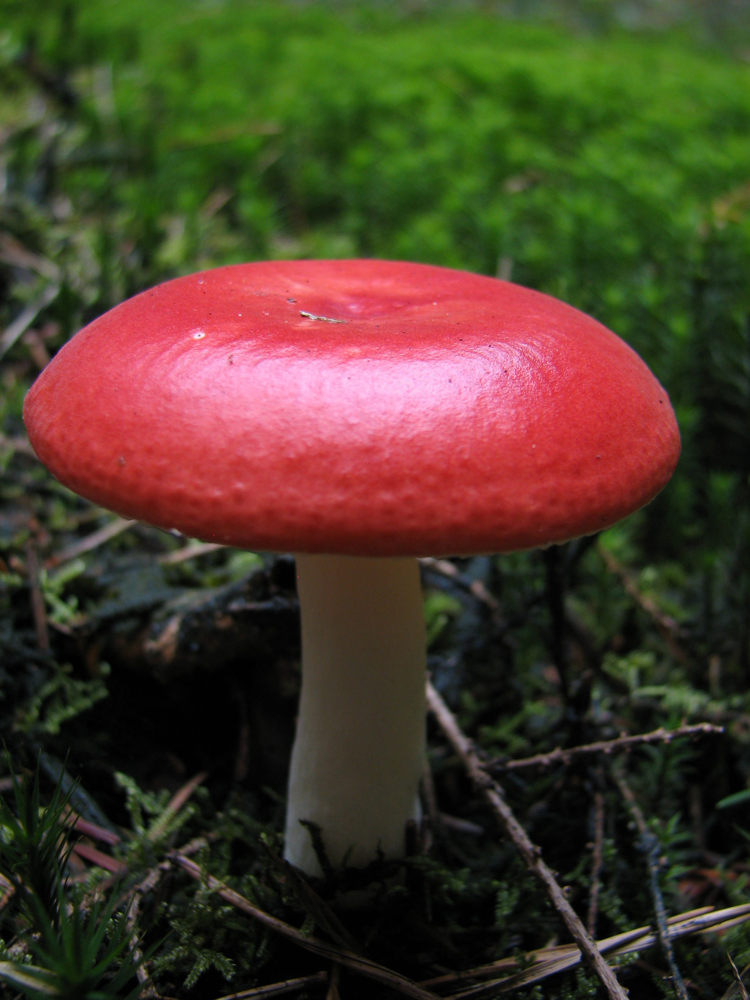
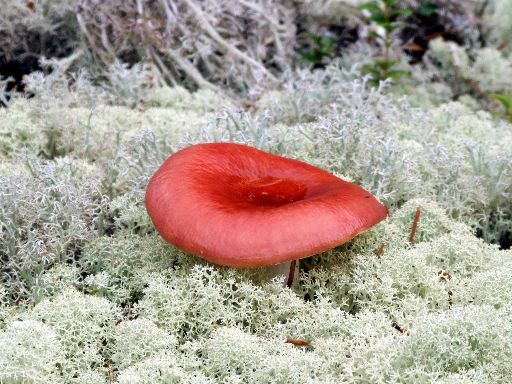

Charakterystyka
| Cecha | Opis |
|---|---|
| Kapelusz | 5 - 11 cm, żywo, krwisto lub wiśniowoczerwony, z wiekiem nieco blaknący i jaśniejszy różowy, przeważnie z białymi śladami żeru, młody prawie kulisty, później wypukły do rozpostartego, w końcu wklęsły; skórka śluzowata, błyszcząca; stary brzeg grzebieniowato prążkowany. |
| Blaszki | Białe lub z żółtawym odcieniem, rzadkie, wybrzuszone, zatokowato wycięte do wolnych. |
| Trzon | Biały, kruchy, cylindryczny, młody pełny, później watowaty i gąbczasty. |
| Miąższ | Biały, pod skórką kapelusza różowoczerwony, kruchy. Zapach przyjemny, owocowy, smak bardzo ostry. |
| Zarodniki | 7,5 - 12,5 x 6 - 9,5µm, z długimi brodawkami. Wysyp białawy. |
Toksyczność
Gołąbek wymiotny (Russula emetica) jest grzybem stosunkowo łatwo rozpoznawalnym dzięki czerwonemu kapeluszowi i białym blaszkom, jednak jest trujący i nie nadaje się do spożycia. Zawiera związki toksyczne, które działają głównie na układ pokarmowy, wywołując silne dolegliwości żołądkowo-jelitowe. Intensywność objawów zależy od wielkości spożytej porcji, wieku grzyba oraz indywidualnej wrażliwości osoby, dlatego każda próba jedzenia gołąbka wymiotnego jest potencjalnie niebezpieczna.
Pierwsze objawy zatrucia zwykle pojawiają się stosunkowo szybko, w ciągu kilkunastu minut do kilku godzin po spożyciu. Zaczynają się od silnych nudności, wymiotów, bólu brzucha i biegunki. Choć początkowo mogą przypominać typowe zatrucie pokarmowe, często są bardziej gwałtowne i intensywne, co powinno wzbudzić niepokój.
W następnej fazie mogą wystąpić objawy ze strony układu nerwowego: zawroty głowy, dezorientacja, splątanie, zaburzenia równowagi i koordynacji, a także zmiany świadomości — od silnego pobudzenia i halucynacji po senność i ospałość. U niektórych osób obserwuje się również drgawki, drżenia mięśniowe czy zaburzenia mowy. Przebieg może być różny — u jednych dominuje pobudzenie i omamy, u innych znaczne osłabienie i senność.
W niektórych przypadkach mogą pojawić się objawy ogólne, takie jak osłabienie, zawroty głowy czy przyspieszone bicie serca. Zaburzenia neurologiczne są rzadkie, ale możliwe u osób szczególnie wrażliwych lub po spożyciu większej ilości grzybów. Objawy te zwykle ustępują po kilku godzinach, ale mogą prowadzić do odwodnienia i ogólnego osłabienia organizmu.